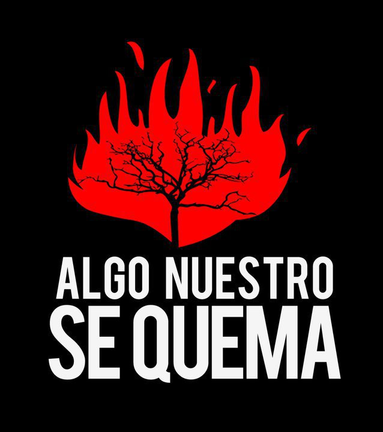

Reflexiones sobre los incendios forestales
Responsabilidad compartida frente al cambio climático
Los incendios forestales son generalmente el resultado de un clima más cálido y seco y son un fenómeno que se está acelerando por el cambio climático inducido por el hombre. Es cada vez más necesario que actuemos juntos e individualmente para mitigar los efectos del cambio climático. Cambiar los hábitos de consumo, reducir las emisiones de gases de efecto invernadero y proteger los bosques son pasos importantes para prevenir estos desastres.
El papel de la solidaridad y la cooperación
En situaciones de crisis, como cuando los incendios forestales amenazan a las comunidades, la importancia de la unidad y la cooperación queda clara. Resolver estos problemas requiere una acción colectiva de los gobiernos y los individuos. Desde la prevención de incendios hasta el apoyo a las víctimas, todos tenemos un papel que desempeñar en la construcción de una sociedad más segura y sostenible.
El valor de la prevención y la educación
La prevención es siempre una respuesta más eficaz. Es importante educar a la comunidad sobre los riesgos de incendio, cómo prevenirlos y qué hacer en caso de incendio. La educación ambiental en la escuela y en el hogar es importante para crear una cultura de respeto y protección del medio ambiente.
